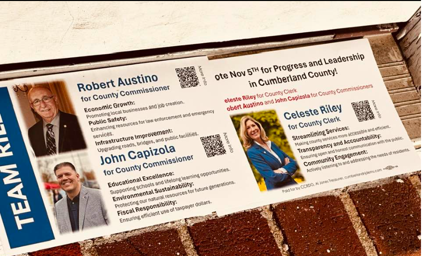

John P. Capizola
Running for:
Cumberland County Commissioner
Incumbent
Challenger


Agenda
- Educational excellence by supporting schools and providing lifelong learning opportunities
- Environmental sustainability by protecting our natural resources for future generations
- Fiscal responsibility by ensuring efficient use of taxpayer dollars
-
View Screenshot
If on desktop, right click the image and select 'open in new tab' for a larger image
 - Improve roads/infrastructure/broadband, support senior housing and healthcare, and provide recreational advancements facebook campaign site
policy positions
After reaching out to Capizola multiple times with no substantive response, it is unclear what his current policy positions are. However, we might be able to infer the
following from last year's efforts:
Capizola and Austino also brought up an issue regarding South Ave in Bridgeton while on the campaign trail: Source, however it seems as though the issue is in the process of being handled: Source, County Press Release.
- Supports armed security in schools. (learned from the Candidates Forum held at Bridgeton High School)
Capizola and Austino also brought up an issue regarding South Ave in Bridgeton while on the campaign trail: Source, however it seems as though the issue is in the process of being handled: Source, County Press Release.
Background and Campaign Message
Cumberland County Democrats chose Capizola to serve out an unexpired, one-year term on the county Board of Commissioners, replacing the
resigning Castellini. Capizola was sworn in January 24th, 2023.
Source
He majored in health and physical education. He has a master's degree in Educational Leadership. He has certifications to be a New Jersey principal and Supervisor. He also has business experience in regards to owning a restaurant and a laundromat.
He majored in health and physical education. He has a master's degree in Educational Leadership. He has certifications to be a New Jersey principal and Supervisor. He also has business experience in regards to owning a restaurant and a laundromat.
Experience
NJ District 1 Assemblyman - Sworn in on January 14th 2020
Serving on the following Committees: Community Development and Affairs/Education/State and Local Government
Mayor, Lower Township - 2016-2020; Former Ward 2 and ward 3 Councilman
Master’s Degree in Education Administration, University of Scranton; Bachelor’s degree, The College of New Jersey, Special Education Degree, Rutgers University
2023 Candidates Forum Statements
When asked what makes him most qualified to serve as Commissioner at the Candidates Forum held at Bridgeton High School,
Capizola spoke about how he is just getting his feet wet as an appointed Commissioner. He seemed to convey that he is
learning a lot about county politics quickly and has watched his board of commissioners transform from very partisan to
mostly non-partisan during his tenure. He hopes to continue that trend. He wants to help attract people who have left the
county to come back by helping to entice new business, which he can help with through his business experience. He also seemed
to imply that he may be a rising star as he may be the new assistant principal at the school where he works.
When asked about improving transparency and accountability, Capizola spoke about needing to communicate better with the community, the new county website which should be done soon, and needing reporters in the county.
At one point during the forum, Capizola made it clear that he is against school vouchers.
When asked about improving transparency and accountability, Capizola spoke about needing to communicate better with the community, the new county website which should be done soon, and needing reporters in the county.
At one point during the forum, Capizola made it clear that he is against school vouchers.